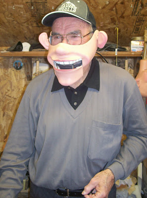

And the winner is...
4/17/2011

"You shall not muzzle the ox while he is threshing."
While it may raise some eyebrows, I selected the above caption submitted by Kirk Rabe as the winner in this photo caption contest. The caption is actually a quote from the Bible (Deuteronomy 25:4) and refers to the Old Testament law that oxen should be allowed to eat grain to satisfy their hunger as they tread upon the grain at the threshing mill. A mean, miserly owner might muzzle his work animals, forcing them to go hungry while he gathers all the threshed grain for himself, but this law instructs that the laborer, too, must be provided for fairly. A modern day paraphrase of this caption for this blog might then go something like this:
"The puppetmaker must eat also; repay him fairly for his service, otherwise he's left with nothing but to talk to himself through mask muzzle. "
For his winning entry, Kirk Rabe will receive a copy of the book Dummy Days by Kelly Asbury. Congratulations Kirk, and thanks to all of you who submitted captions. You are a creative group!